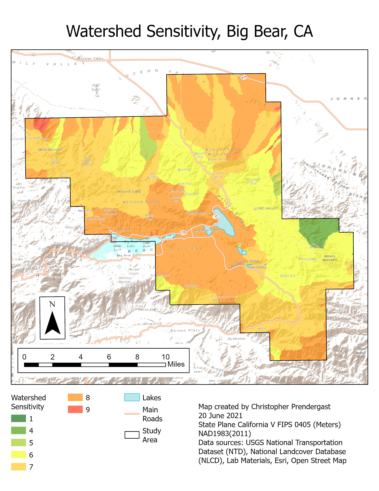

Overview
An analysis to identify suitable potential locations for a new mining operation within an environmetally sensitive area of the San Bernadino National Forest near Big Bear, California. The area has high-grade calcium carbonate depoits. However, it also provides habitat for endangered plants that only grow on soils containing calcium carbonate. Four rare plants live only in this carbonate habitat: the Cushenbury buckwheat (Eriogonum ovalifolium var. vineum), the Cushenbury milk-vetch (Astragalus albens), the Cushenbury oxytheca (Acanthoscyphus (Oxytheca) parishii var. goodmaniana), and Parish’s daisy (Erigeron parishii). An ArcGIS ModelBuilder model was created to incorporate various factors into the suitability analysis. Factors sutudied include accessibility, plant habitat sensitivity, and watershed sensitivity. The images below show parts of the ArcGIS ModelBuilder model and some of the maps generated from this model.
Accessibility Model
ModelBuilder model classifies accessibility based on how difficult it is to traverse the landscape, taking into account roads, highways, streams, vegetation types, land ownership, and slope.
Model for accessibility.
{kind=link}
Accessibility Map
Map identifies how difficult it is to traverse the landscape, taking into account roads, highways, streams, vegetation types, land ownership, and slope. Easily traveresed areas are labeled in green, while those that are least accessible, including private property, are labeled in red.
Map of output from accessibility model.
{kind=link}
Plant Habitat Sensitivity Model
ModelBuilder model classifies the sensitivity of plant communities to disturbance, taking into account endemic carbonate species, vegetation types (conifer forest, pinyon juniper woodland, riperian forest, chaparral, and creosote bush), threatened and endangered species habitat, special interest areas, and research natural areas.
Model for plant habitiat sensitvity.
{kind=link}
Plant Habitat Sensitivity Map
Map identifies sensitivity of plant communities to disturbance, taking into account endemic carbonate species, vegetation types (conifer forest, pinyon juniper woodland, riperian forest, chaparral, and creosote bush), threatened and endangered species habitat, special interest areas, and research natural areas. Least sensitive areas are labeled in green, while highly sensitive areas are labeled in red.
Map of output from plant habitat sensitivity model.
{kind=link}
Watershed Sensitivity Model
ModelBuilder model classifies areas subject to excessive disturbance, taking into account roads, highways, trails, OHV areas, quarries, mills, timber zones, shooting zones, and recreation areas.
Model for watershed sensitivity.
{kind=link}
Watershed Sensitivity Map
Map identifies areas subject to excessive distriubance, taking into account roads, highways, trails, OHV areas, quarries, mills, timber zones, shooting zones, and recreation areas. Least sensitive basins are labeled in green, while the most sensitive basins subject to excessive disturbance are lableled in red.
Map showing output from water sensitivity model.
{kind=link}